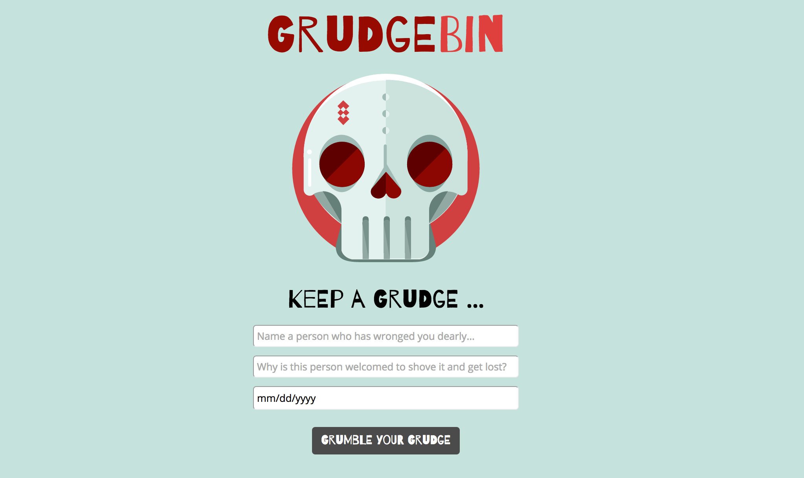
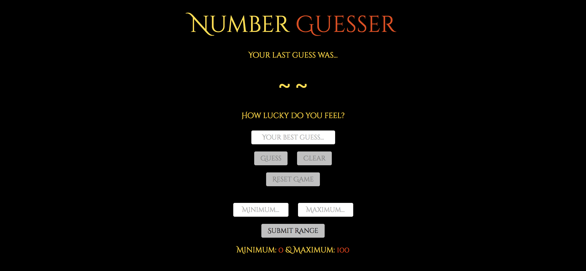
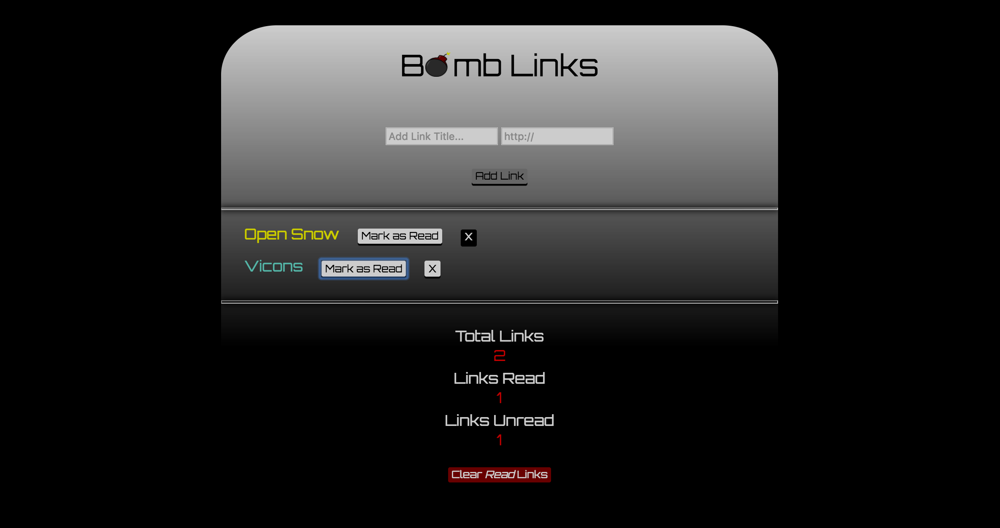
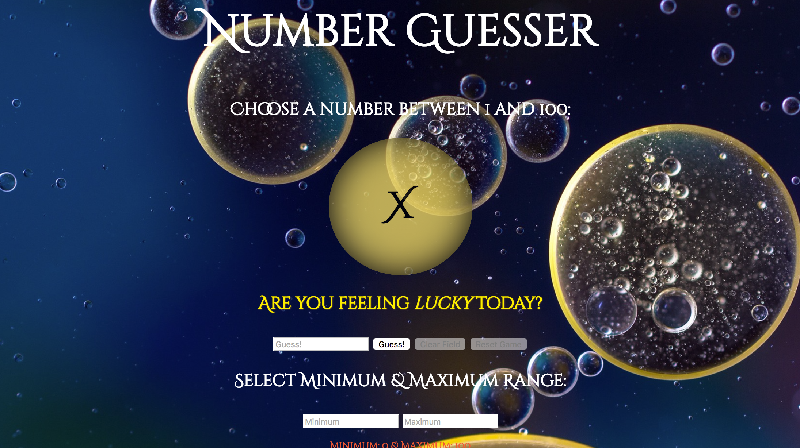
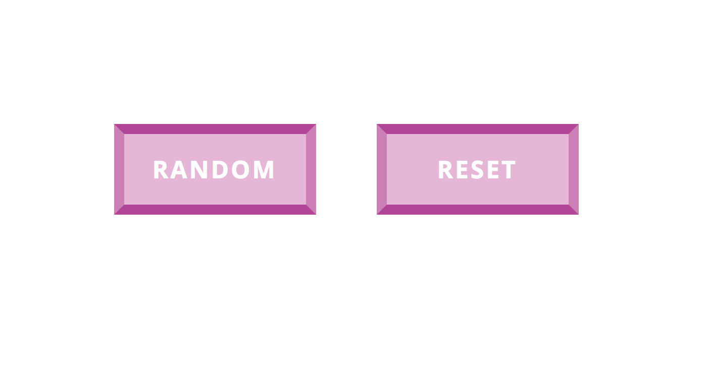

Mini Projects
These apps were mostly spawned from assessments or side projects during regular curriculum hours at Turing.
Grudge Bin

The main goal of this app is to allow a user to add a person who has wronged them to a list of 'most hated', the grudge bin.
A user is able to provide a reason the person wronged them and add a respective date, then chose to forgive or unforgive them.
TECH: es6, jQuery, CSS, Node.js, Express
Number Guesser in ReactJS

Here, I re-built a small game based on the original NumberGuesser where the user picks a number between 1 and 100, this time using ReactJS and ES6.
Upon entering the number, the application displays feedback indicating how close their guess was to a random number that was generated.
We worked on this project near the end of October, inspiring a Halloween theme.
TECH: ReactJS, SASS
Seven Weeks of Fonts
Drawing inspiration from the Yale School of Art’s 100 Days project, I built a new typographic experiment for 4 weeks that shows the full collection of type exercises.
I asked myself, how can various typographic stles paired with imagery be communicated through layout, scale, and color?
TECH: Pure HTML and CSS
'Linked List'

This project aimed to allow a user to name a bookmark with a title and save a URL link to a webpage to the DOM.
Users can mark a link as read and remove the bookmark from their list.
TECH: VanillaJS, jQuery, CSS
Number Guesser

Number Guesser is a mini-game by which your task is to guess a number between a default range of 1 and 100 that matches a computer-generated random number.
If your number is too high, too low, out of the accepted range, not a valid entry (such as a letter), or equal to the computer's number, you will receive condition-specific feedback on your guess.
Guess correctly to win to increase the minimum and maximum range, or do so manually.
TECH: Vanilla Javascript, CSS
Scrabble Word Scorer
In this mini app, you are able to enter any word and get a live update of the Scrabble score for your word as you type it letter-by-letter.
You are able to save words and their respective score. This app was built in about 30 minutes during a final assessment in Module 2.
TECH: D3.js, Vanilla Javascript, jQuery, SASS
Color Changer

This beginner mini-project was aimed at doing exactly what the name implies: change some colors.
This small application has two buttons, one which sets a random background color that cannot be white and another that resets the background color to white.
TECH: D3.js, Vanilla Javascript, jQuery, SASS